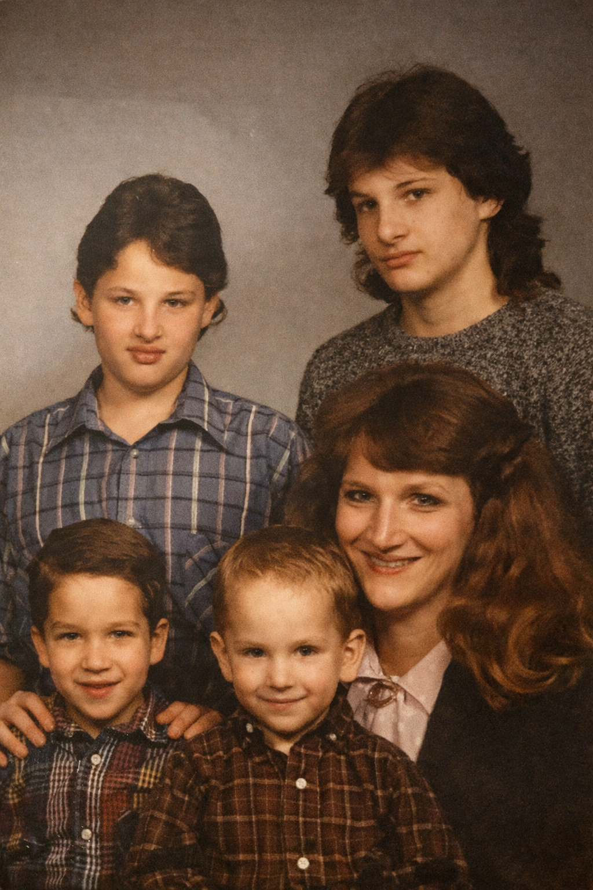
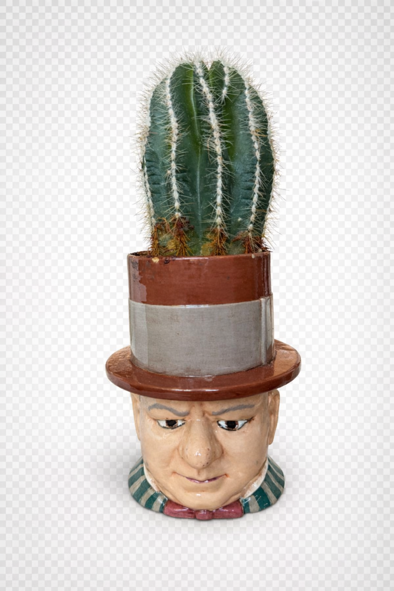
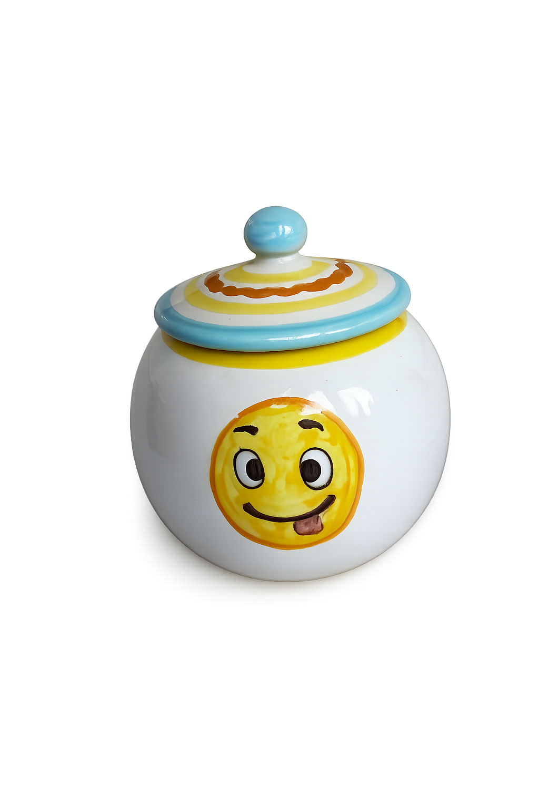
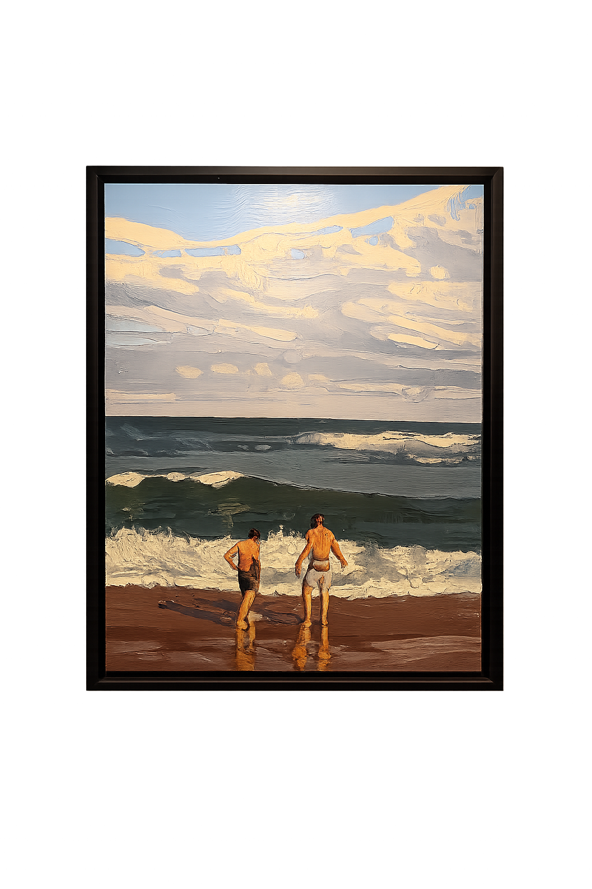
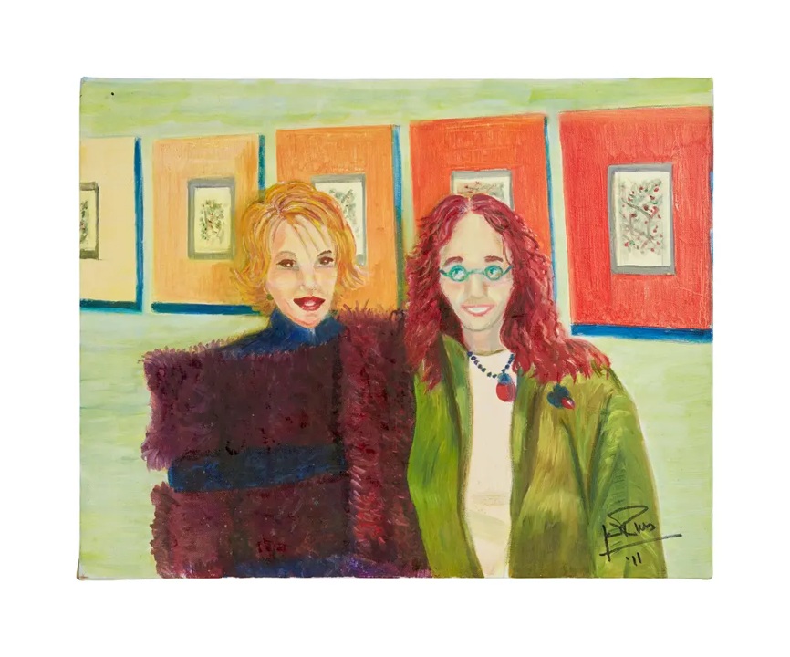
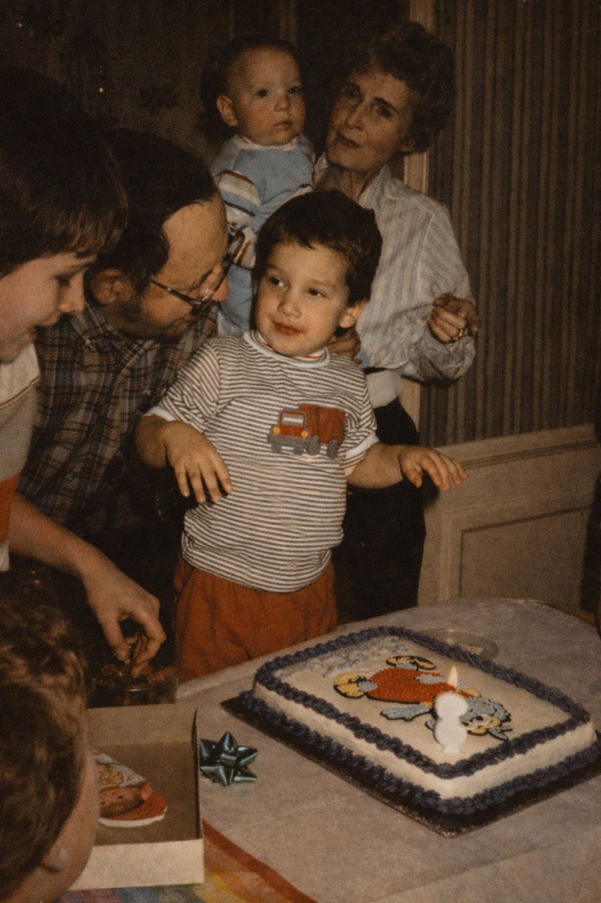
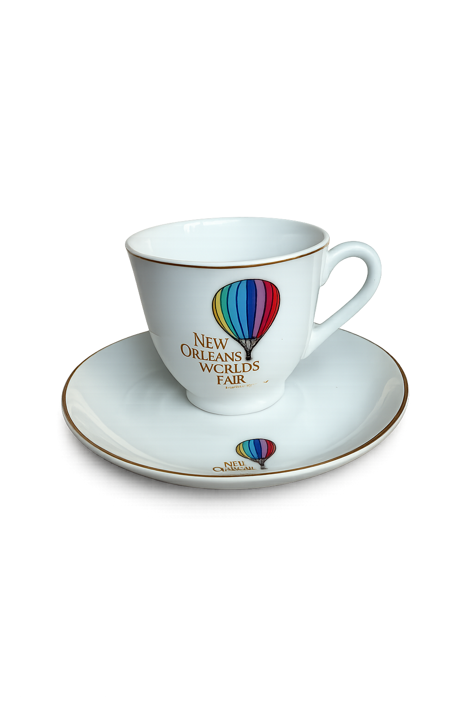
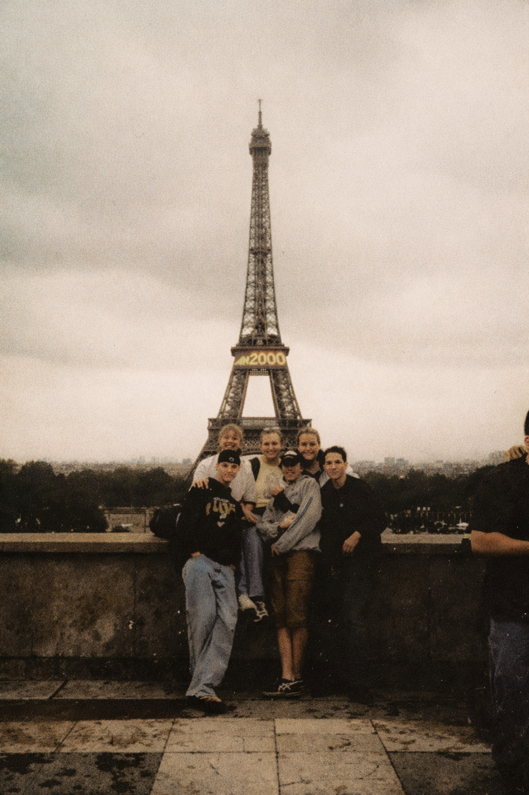

Austin

I was born and raised in Austin, Texas.
Austin
I’m the third of four boys.
Music

My dad was a working musician in Austin. He played in several bands.
New York

I moved to NYC in 2008. My favorite Halloween, ever.
New York

Where I began the majority of my career.
New York
Where I moderately excel as an amateur indoor plant hobbyist. This is W.C. Fields.
W.C. FieldsNew York

And where I met my husband.
Collecting

I collect objects and moments that hold meaning. And I adore Parker Posey.
Collecting

Like this vintage NORCREST FURLAND Anthropomorphic Pal.
Collecting
Or this handmade jar I purchased in Montepulciano, IT.

Collecting
I also collect art, including this painting by my friend Mitch Ferrin.
Visit Mitch FerrinCollecting
A more recent purchase is this painting by Joan Rivers.
Collecting
My grandmother had a professional cake business. Gonzo Cake!
Collecting

That inspired my interest in both enjoying and creating things. I made these!
Breakfast Taco RecipeTravel
We went to New Orleans often when I was growing up. I was at this fair!
Travel

The first country I visited was Mexico. We spent time in Mexico City.
Travel
The next was France.
Travel
Now I’ve lost count of how many places I’ve been since!